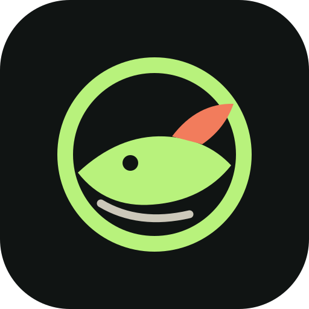
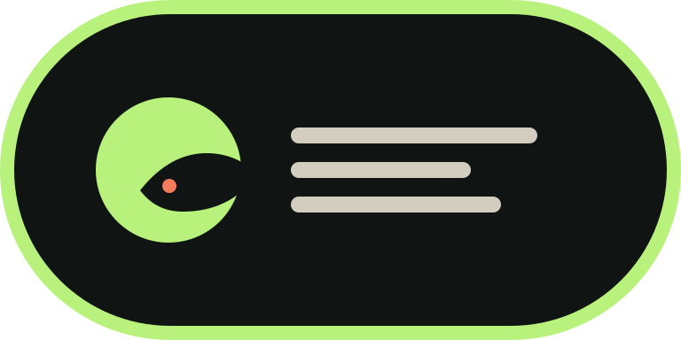

01 · 潮汐标
最适合应用图标和菜单栏。远看像一个安静的状态灯，近看才看到鱼和阅读信号。
推荐默认这里是 1.0 的三套 Logo 方向。它们共享 WeFish 的深墨、荧光绿和珊瑚色，但性格不同：安静的潮汐、打开的书页、状态栏胶囊。

最适合应用图标和菜单栏。远看像一个安静的状态灯，近看才看到鱼和阅读信号。
推荐默认更直接地表达“阅读”，适合 GitHub README、介绍页和项目封面。
阅读感最强
横向识别力最好，适合网站导航、下载页和社交分享图。
展示感最强